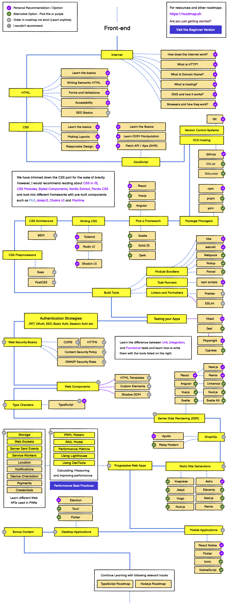
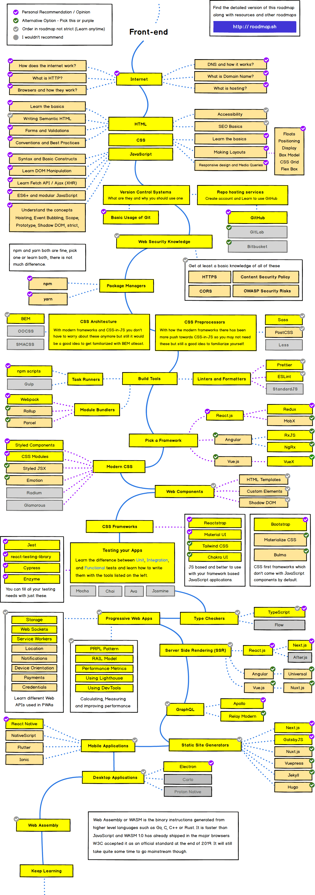

Developer Roadmap は、文字通りエンジニアのロードマップとして有名かと思います。
普段は業務に直接関連しない技術に触れる機会がないため、こういうものでキャッチアップしていきたいです。
今回は、2023 年版の Frontend Developer Roadmap を、過去の版と見比べつつ見ていこうと思います。
2023 年版がこちらです。

2020 年版がこちらです。

HTML
Writing Semantic HTML, Accessibility が Recommendation にランクアップしています。
ぱっと見の見た目が整っていれば良いという時代から、機械からの読みやすさ・ハンディキャップを持つ方からの読みやすさ（読み上げなど）にも注目されるように移り変わったことがわかります。
Package Managers
pnpm が増えた一方、yarn が Alternative に格下げされています。
npm の性能が上がったことで、yarn の必要性が減ってきたものと思われます。
Pick a Framework
ロードマップ上で、Pick a Framework が前の方に移動しています。
これらの採用がますます一般的になったようです。
Svelte・Solid JS・Qwik が追加されています。
この 3 点は、State of JS でも最上位にランクインしています。
React が Recommendation なのは変わらないようです。
現状の最有力候補は React、次世代の可能性が Svelte・Solid JS・Qwik という感じのようです。
CSS
CSS に関する項目（Modern CSS、CSS Frameworks、Writing CSS）についてはかなり変わっています。
2020 年版では CSS in JS（Styled Components、CSS Modules）や Reactstrap、Material UI、Bootstrap が Recommend されていますが、2023 年版では全てなくなっています。
2023 年版では、Tailwind・Radix UI・Shadcn UI のみになっています。
変化が大きいですね...。
Module Bundlers
webpack から、Vite・esbuild に Recommendation が変わっています。
実際開発環境のビルドが爆速に変わるので、重要な変化ですね。
webpack 後継の turbopack 等は触れられていませんでした。
Server Side Rendering(SSR)
React > Remix が増えています。気になります。
Static Site Generators
Next.js・GatsbyJS から、Astro に Recommendation が移行しています。
GatsbyJS に至ってはなくなってしまっています。
Developer Roadmap のサイト自体、Astro で作成されているそうです。
Desktop Applications
Recommendation が Electron なのは変わりませんが、Tauri・Flutter が Alternative に追加されています。
Web Assembly
2023 年版では Bonus Content 内に移動しています。
注目度が下がっているのでしょうか？
まとめ
2020 年からの変化があらかた確認できました。
聞いたことない項目も複数あり、今後キャッチアップしていきたいです。